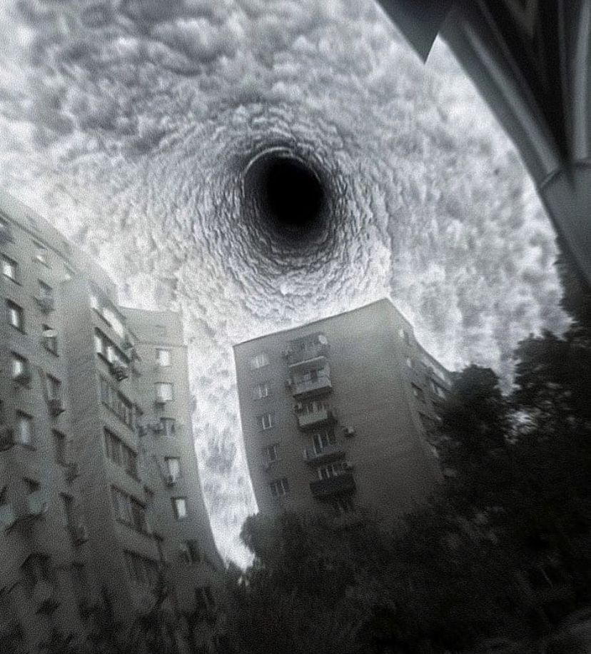

Construindo o futuro da medicina desde 1974
Início | Sobre | Pesquisa Médica | Contato
Fundada em 1974, a IRIS Corporation é líder global em pesquisa médica avançada e tecnologias de observação biológica. Nossa missão é prolongar vidas, conectar conhecimentos e garantir um futuro saudável para todos.
Com equipes multidisciplinares e tecnologia proprietária, desenvolvemos soluções que transcendem as fronteiras convencionais da medicina.
Estudamos o cérebro humano para compreender padrões de memória, percepção e comportamento.
Desenvolvemos protocolos experimentais de regeneração celular e extensão de vida. ELE ESTÁ ESCUTANDO
Projetos de sincronização e estabilidade biotemporal.
Desde nossa fundação, milhares de vidas foram impactadas positivamente por nossas pesquisas. Cada avanço nos aproxima de compreender e preservar a essência da existência humana.
Entre os projetos de maior destaque estão os protocolos de Reescrita Biológica, o mapeamento cerebral temporal e a expansão da rede de observação neural.

A IRIS Corporation revelou um novo método experimental de reconstrução neural controlada. Segundo a CEO: “o futuro da humanidade está na capacidade de observar e corrigir a si mesma”.
THURBI SABE.
O estudo em larga escala sobre a estabilidade biotemporal demonstrou resultados inéditos. Cientistas afirmam que os testes “estão sob controle absoluto”.